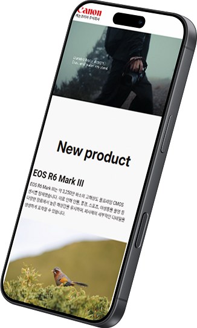
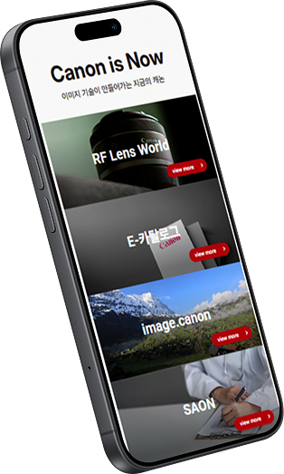
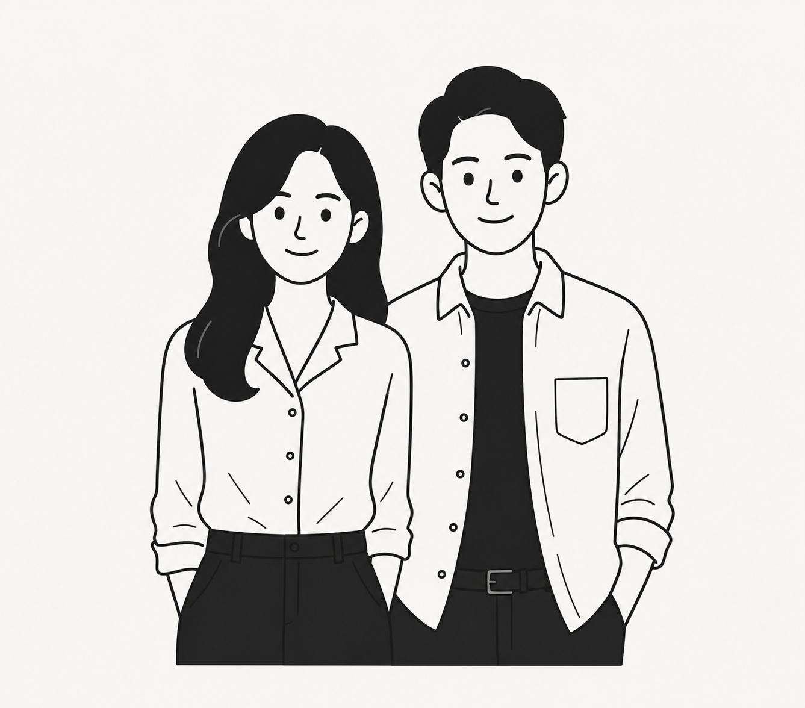
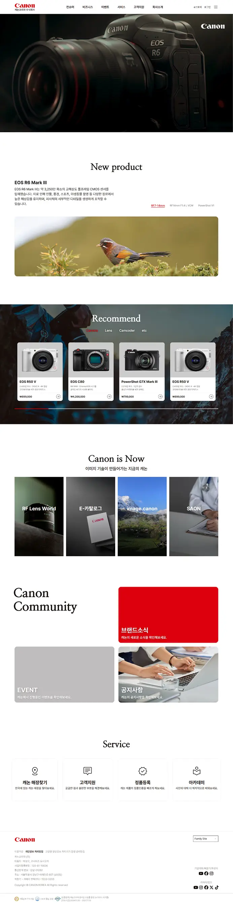
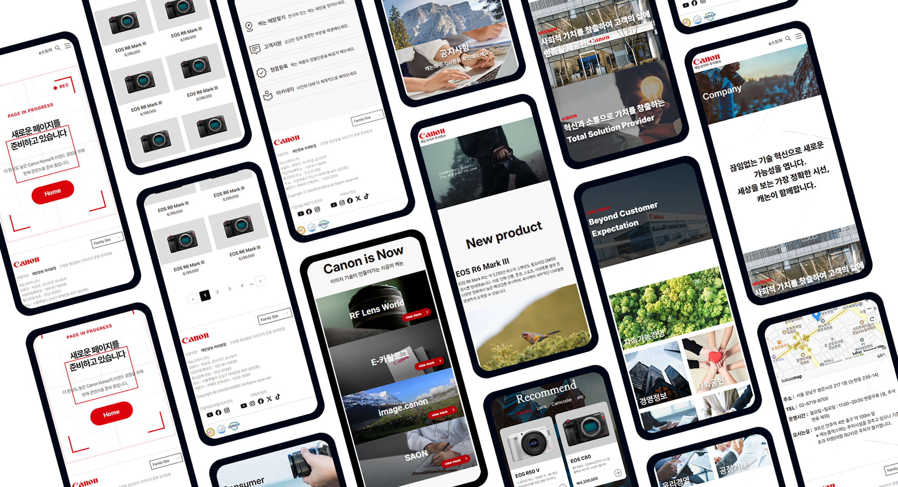

메인영역
Canon
국내 카메라 시장 점유율 1위 브랜드 Canon의 디지털 경험을
재설계하는 리뉴얼 프로젝트


“사진을 시작하고 싶게 만드는 캐논”
캐논은 사진을 시작하는 사용자가 가장 먼저 검색하는 브랜드로, 정밀한 이미징 기술과 혁신적인 광학 기술을 바탕으로 사진과 영상의 새로운 가능성을 제시하고 있습니다.
정보 중심 구조로 인해 브랜드 경험과 제품 탐색 흐름이 분산
콘텐츠와 제품 정보가 단순 나열형으로 구성되어 사용자의 몰입감과 탐색 효율 떨어짐
캐논만의 브랜드를 사용자가 자연스럽게 경험할 수 있는 UX로 재구성
제품 탐색, 브랜드 콘텐츠, 인터랙션 경험을 연결하여 캐논 브랜드 경험을 강화하고자 함
기존 사이트 분석
사용자 시나리오를 따라가며 도출한 강점, 개선할 점.
개선할 부분은 리뉴얼 개선 방향으로 이어집니다.
타겟 페르소나
단순 제품 구매가 아닌, 사진과 영상이라는 취미와 콘텐츠 제작을 시작하며 카메라 선택 과정에서 브랜드 신뢰와 직관적인 탐색 경험을 중요하게 여기는 사용자를 중심으로 리뉴얼을 진행하였습니다.

크리에이터 사용자
특징
깔끔한 디자인, 빠른 정보 탐색 중시
목적
제품 정보 획득, 브랜드 신뢰 확보
시나리오
SNS → 페이지 방문 → 제품 비교 및 정보 탐색 → 구매
목표
목적에 맞는 제품 탐색 후 구매
사용자 니즈
- 01카메라 제품 비교 가이드와 추천
- 02누구나 쉽게 이해할 수 있는 직관적인 제품 탐색 구조
- 03제품 탐색 → 서비스 접근으로 자연스럽게 이어지는 구조
- 04환경을 구애받지 않는 구매 흐름
"정보를 보여주는 사이트"에서
"사진을 시작하고 싶게 만드는 사이트"로
디자인 시스템
— Color Tokens
#1A1311
#DC000C
#3A3A3A
#7A7A7A
#BABABA
#FFFFFF
— Typography
Pretendard Variable / 18
Pretendard Variable / 24
Pretendard Variable / 32
Roboto / 24
Roboto / 44
Roboto / 56
UI/UX 개선

비주얼 영역
비주얼 영상과 브랜드 문구를 활용해 제품 경험을 동시에 전달하고, 사용자가 첫 화면에서 Canon의 브랜드 감성을 직관적으로 경험 가능하게 개선했습니다.
신제품 영역
대형 결과물 이미지를 활용한 감성 중심 구성으로 단순 스펙이 아닌 “촬영 경험” 중심 탐색을 제공해 사용자가 제품 결과물을 먼저 경험 가능하게 개선했습니다.
추천 영역
제품 이미지, 가격, 핵심 특징을 시각적으로 구분하여 제품 비교가 한 화면에서 가능하도록 개선했습니다.
Canon is Now
Hover 시 카드 너비가 확장되는 인터랙션을 적용해 콘텐츠 몰입감을 향상시켰습니다.
커뮤니티 영역
카드 크기와 컬러를 활용한 시각적 위계를 강화했습니다.
서비스 영역
아이콘 기반 카드형 UI를 적용해 주요 기능 접근 동선을 단순하게 개선했습니다.

이미지 클릭 시 실제 사이트로 이동합니다
프로젝트 활용 툴
HTML
마크업 구조 설계
CSS
스타일링 · 레이아웃
JavaScript
동적 인터랙션 구현
Figma
UI 디자인 · 프로토타이핑
Git
코드 버전 관리 · 협업
Premiere Pro
히어로 영상 편집
Photoshop
이미지 보정 · 합성
Chat GPT
AI협업 · 이미지생성
Gemini
AI협업 · 이미지생성
Claude
AI협업 · 리서치 보조